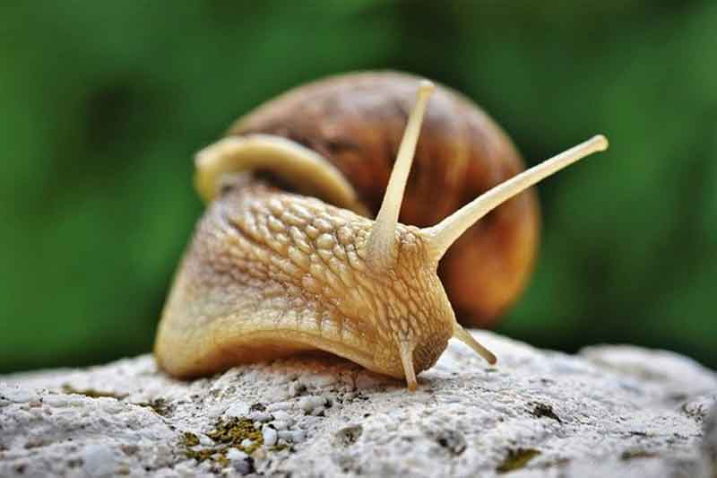

이색 반려동물, 달팽이에 대해 알아봐요!
강아지, 고양이. 대부분 가정에서 키우는 반려동물입니다. 하지만 요즘은 이색 반려동물도 인기를 끌고 있죠. 그중 하나가 바로 '달팽이'입니다. 어린 시절 비 오는 날이면 큰 나무 잎사귀에 붙어 있는 달팽이를 종종 볼 수 있는 데요. 이제는 집에서 달팽이를 사육하는 시대! 달팽이에 대해 알아볼게요.
[달팽이 종류]
달팽이의 종류는 약 2만여 종. 아주 작은 달팽이는 1mm 정도로 눈에 띄지도 않을 만큼 작은 크기지만, 아주 큰 달팽이는 10cm에 달한다고 합니다.
우리가 흔히 볼 수 있는 달팽이는 '명주 달팽이'이라고 합니다. 반면, 조금 더 큰 달팽이를 키우고 싶은 분들은 식용달팽이로 유명한 '금와달팽이, 흑와달팽이, 백와달팽이' 등을 키우기도 합니다. 그 외에도 흔히 식용으로 쓰는 달팽이로 '아프리카 왕 달팽이'가 있습니다.
[달팽이의 수명]
보통 반려동물 겸 식용으로 키우는 달팽이의 수명은 2~3년이라고 합니다. 아주 건강한 달팽이는 4년까지도 산다고 합니다. 다만, 알을 낳은 달팽이는 오래 살지 못하고 몇 달 이내에 죽는다고 합니다.
다만, 달팽이는 스트레스에 취약한 동물로 손으로 자주 만지거나 외부 환경에 자극을 주는 행동을 한다면 수명보다 훨씬 빨리 죽을 수도 있습니다. 특히, 작은 달팽이는 스트레스는 물론 외부의 작은 충격에도 쉽게 패각이 깨지는 상황이 발생할 수 있어 될 수 있으면 건드리지 않고 보는 것으로 만족하는 것이 좋습니다.
[달팽이의 먹이]
달팽이는 당근, 오이, 배추, 과일 껍질 등의 채소가 주식입니다. 먹이를 넣어두면 알아서 곧잘 먹곤 하죠. 달팽이의 건강을 잘 관리하기 위해서는 달걀 껍데기를 곱게 간 난각가루를 영양제로 급여하는 것도 좋습니다.
얼마만큼 급여해야 하나 고민될 때는 채소를 넣어보시고 어느 정도 먹는지 가늠해 볼 수 있습니다. 먹는 양만큼 신선한 채소를 넣어준다면, 신선하고 맛좋은 채소를 달팽이가 먹을 수 있겠죠?
[달팽이의 온욕]
달팽이를 키울 때 재미있는 점은 온욕을 즐긴다는 거죠! 미지근한 물에 달팽이의 몸을 살짝 담가 놓는다면 지저분해진 몸과 패각이 깨끗하게 씻겨진답니다.
특히, 보리차를 무척 좋아하는 달팽이! 미지근한 보리차에 더듬이(호흡공) 이 닿지 않을 정도로만 담가준다면 보리차를 마시면서 물통을 돌아다니는 행복한 달팽이를 만나볼 수 있답니다.
그 외에도 달팽이를 키우기 위해서는 달팽이 전용 흙을 준비하시고, 항상 습기를 머금을 수 있는 물그릇과 분무기, 겨울에는 따뜻한 내부 공기가 필요합니다. 특히, 외래산 달팽이는 추위에 매우 약해서 겨울철에는 동사하지 않도록 관리해줘야 한답니다. 작고 귀여운 달팽이! 정성과 사랑으로 키워줄 준비가 되어 있다면 이색 반려동물! 달팽이를 키워보는 것도 반려동물과의 행복한 추억을 만드는 일이겠죠.
[출처] 이색 반려동물, 달팽이에 대해 알아봐요! ｜ 작성자 코코네집